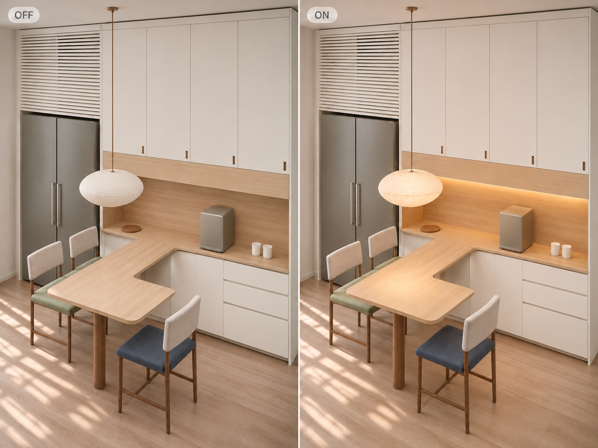
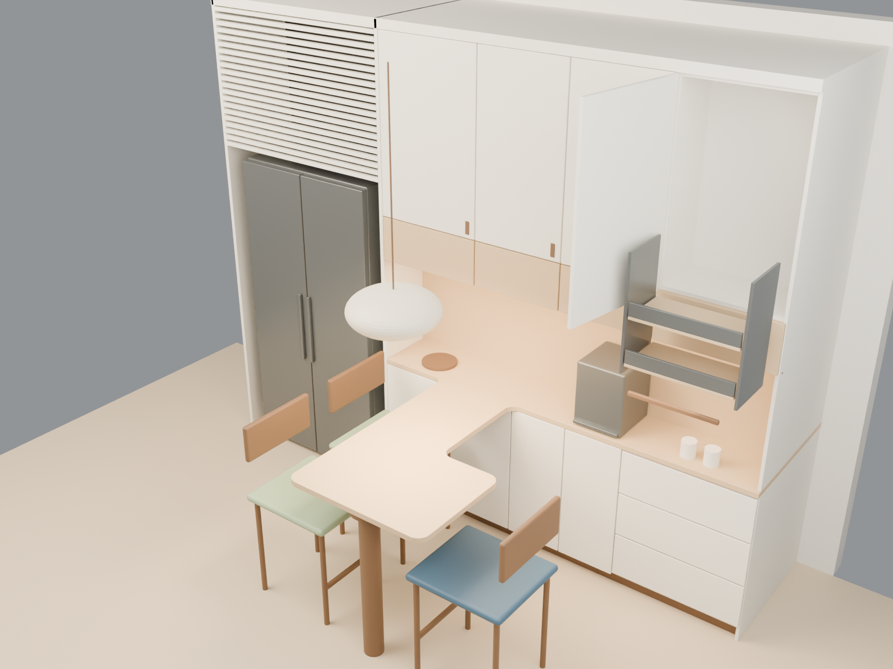
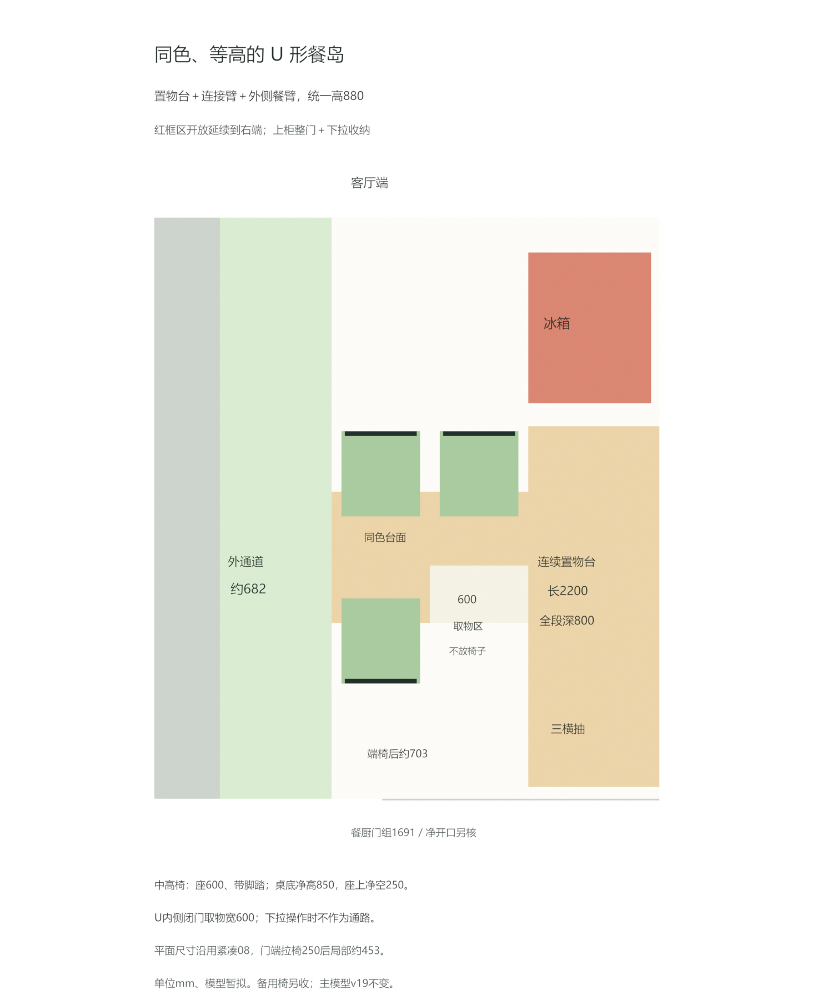
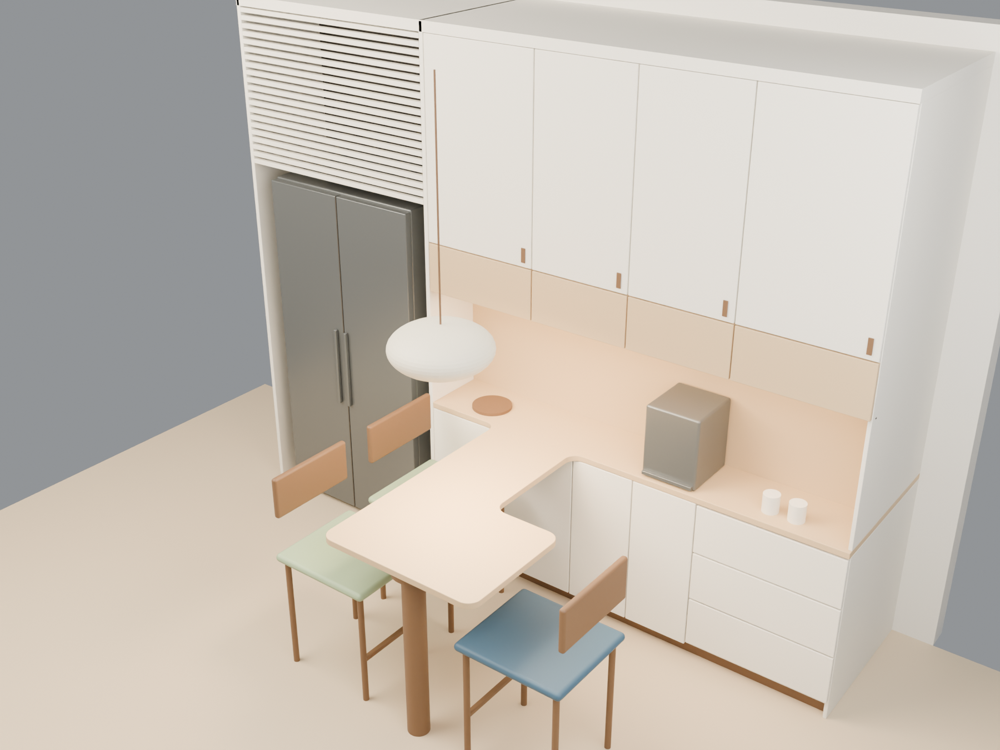

已有更新：用户要求端头起步、餐臂再延长，并明确本轮先不考虑凳子。请看独立10最新方案。下方09的内退起点、短餐臂与椅位仅作历史。
历史独立方案09 · 2026-11-06 · 主模型未融合
同色、等高的U形台面
开放置物区延续到右端
沿墙置物台、连接臂与外侧餐臂连成一张连续U形台面，统一高880 mm。浅木色连续覆盖台面、置物区内衬与薄翻门带，上下柜保留暖白实门。右侧原来打断置物区的高柜列已取消。
已确认：等高U形、颜色统一、红框处延续置物区、保留完整上柜并采用下拉收纳。具体浅木实样、五金型号及本轮细化尺寸仍是提案。主模型继续v19，原28件家具、VR及对侧柜不变，未启动v20。
全关灯／全开灯

U形与高度
连续880高，取消130高差
| 沿墙柜段 | 2200长 × 800深；门面继续对齐冰箱门面 |
|---|---|
| 连接臂柜外伸出 | 1200 × 450；与置物台、餐臂同一片台面 |
| 外侧餐臂 | 800 × 600，外露角R60 |
| 台面厚度 | 30，底面850、顶面880 |
| 日常椅 | 三把中高椅，座600、总高980、脚踏约210；座面到台底250 |
| 座位位置 | 客厅外端两把、厨房外端一把；内侧与长边通道不摆椅 |
| 备用椅 | 第四把另收，款式和真实收纳点待定 |
U形两条平行臂不等长，为厨房端转弯留空间。台面不是一圈封闭结构，开口继续朝餐厨端。
红框与颜色
整段2200开放置物带
| 红框原高门 | 取消遮挡开放区的竖向实门列；背板、操作台及灯带横向延续到最右端 |
|---|---|
| 开放段 | 离地880–1480，高600；名义宽2200，至右端侧板的背板宽2182 |
| 可用台面深度 | 背板前约332；柜体总深800包含后部及安装空间 |
| 薄翻门带 | 1480–1730，深220，前沿协调到800线，保留原四段式参考 |
| 统一浅木色 | U形台面＋置物区背板＋薄翻门带，采用同一饰面意向 |
| 其他材料 | 暖白上下柜、深木椅架、绿色与深蓝椅面；取消本段原深胡桃木中带 |
| 下柜 | 继续保留三排横抽及实门，连接承托段不虚计为活动收纳 |
蓝框：整门上柜＋下拉收纳
取消原右上独立小门和高位分格；四扇完整上柜门统一从1730延伸到2700，顶部封闭收口到暂定2750。柜内用可下拉的两层篮取物，不再在篮体之外增加拿不到的固定高层板。

| 上柜名义分段 | 600＋500＋500＋600＝2200；四扇完整门，低位拉手 |
|---|---|
| 柜内净深／净高 | 约313／934；上柜实际总深350 |
| 模型中的托盘层位 | 收起1890／2114；展开示意1505／1729 |
| 原理动画 | 第1帧关门，第30帧右门打开，第45帧篮体向前，第60帧降低；只表达取物逻辑 |
| 选型状态 | 参考500／600柜适用的双层下拉思路，未指定购买型号；图中行程及载荷不作为产品参数 |
厂家资料确认这类配件可将储物向前、向下移动，双层版本以710以上柜高作参考；某600宽型号给出的内宽范围为562–568、配件深267、高565。这里只用于核对方案包络，不将示意模型当成完整安装验收。Kesseböhmer官方原理 · 官方示例尺寸
下一步实际五金需核对门铰、灯槽、真实前伸和下降轨迹、容器高度、承重及使用者身高。靠连接臂的中间上柜须从U开口侧操作，尤其要验证侧向取物站位；没有据此宣称全部动作同时通过。
平面与动线

- 外侧连续家具净距仍约682 mm，内侧闭门取物区仍600 mm；高度统一不会增加平面通道。
- 厨房端椅背到餐厨边界约702.5，额外拉250后局部452.5。中高椅暂沿用520×480包络，具体椅型仍需核对。
- 下拉时内侧作为取物操作区，不能同时当作穿行通道。冰箱全开、实际门净开口、柜门和人的动作仍待复核。
- 不改对侧400深通长柜与换鞋区。800齐平线仍基于750深冰箱机身＋后50占位，最终按冰箱型号校正。
文件与来源

同版原生关门参考
